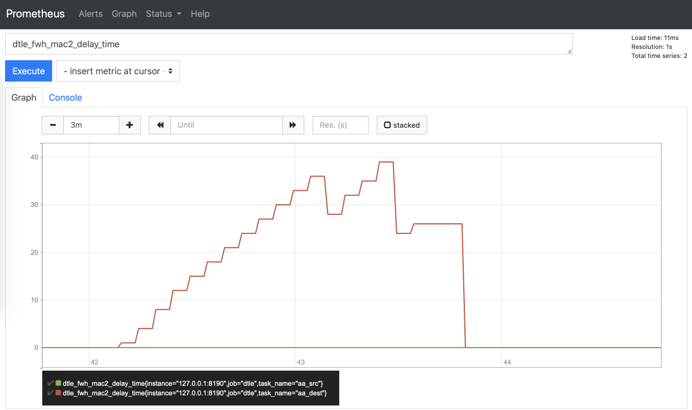

监控项说明
nomad原生metrics可访问：http://127.0.0.1:4646/v1/metrics?format=prometheus
由于nomad plugin并不能访问nomad监控接口，dtle有关的监控需要通过API兼容层访问。
注意：通过兼容层只能看到本节点运行的任务的监控项。
配置
首先配置nomad.hcl中打开api兼容层，并配置publish_metrics = true。
plugin "dtle" {
config {
api_addr = "127.0.0.1:8190"
nomad_addr = "127.0.0.1:4646"
publish_metrics = true
stats_collection_interval = 15
...
访问 127.0.0.1:8190/metrics 可查看监控项，或在prometheus中配置从此地址获取监控项。
监控项
| 类别 | 监控项 | 说明 |
|---|---|---|
| 网络流量状态 | - | - |
| - | network.in_msgs | - |
| - | network.out_msgs | - |
| - | network.in_bytes | - |
| - | network.out_bytes | - |
| 缓存/队列状态 | - | - |
| - | buffer.src_queue_size | - |
| - | buffer.dest_queue_size | - |
| - | buffer.send_by_timeout | - |
| - | buffer.send_by_size_full | - |
| 内存使用估计 | - | - |
| --全量计数值 | memory.full_kb_count | - |
| --增量计数值 | memory.incr_kb_count | - |
| --全量估计值 | memory.full_kb_est | - |
| --增量估计值 | memory.incr_kb_est | - |
| 延迟统计 | - | - |
| - | delay.time | - |
| 表统计（未实现） | - | - |
| - | table.insert | - |
| - | table.update | - |
| - | table.delete | - |
| 吞吐统计（未实现） | - | - |
| - | throughput.num | - |
| - | throughput.time | - |
| 事务统计 | - | - |
| - | src_extracted_incr_tx_count | 增量阶段中源端完成抽取并解析的事务总量。从源端任务启动开始计数，重启任务时计数清零。可配合prometheus的irate()计算tps，如：irate(demo_src_extracted_tx_count[1m]) |
| - | dest_applied_incr_tx_count | 增量阶段中目标端完成回放的事务总量。从目标端任务启动开始计数，重启任务时计数清零。可配合prometheus的irate()计算tps，如：irate(demo_dest_applied_tx_count[1m]) |
| sql执行量统计 | - | - |
| - | src_extracted_incr_query_count | 增量阶段中源端完成抽取并解析的dml/ddl数量。从源端任务启动开始计数，重启任务时计数清零。可配合prometheus的irate()计算qps，如：irate(demo_src_extracted_query_count[1m]) |
| - | dest_applied_incr_query_count | 增量阶段中目标端执行的ddl/dml总量(未commit前也算)。从目标端任务启动开始计数，重启任务时计数清零。可配合prometheus的irate()计算qps，如：irate(demo_dest_applied_query_count[1m]) |
内存使用
- dtle根据数据量（内存计数值）来估计内存占用。因程序处理，实际使用的内存有放大效应
- 内存估计值 = 内存计数值 x 放大系数
- 根据Go内存分配器原理，job处理完后，内存可能不会立刻被释放给操作系统
任务延迟
延迟统计仅对增量（含Kafka输出）有效，其原理为：
- 源端MySQL在执行事务时，binlog中记录了时间戳
- dtle在传输/回放事务时，取时间戳和当前时间的差值为延迟值
- 如果一段时间（15s）没有事务，则重置延迟值为0
注意事项
- 需要MySQL和dtle主机的时间基本正确
- 源端和目标端都有延迟统计，取两者中大值为延迟
为了便于查看延迟曲线以及跟踪高延迟情况，可用Prometheus抓取dtle的监控项并使用Alertmanager发送告警， 步骤可参考 延迟告警示例。
效果图：
